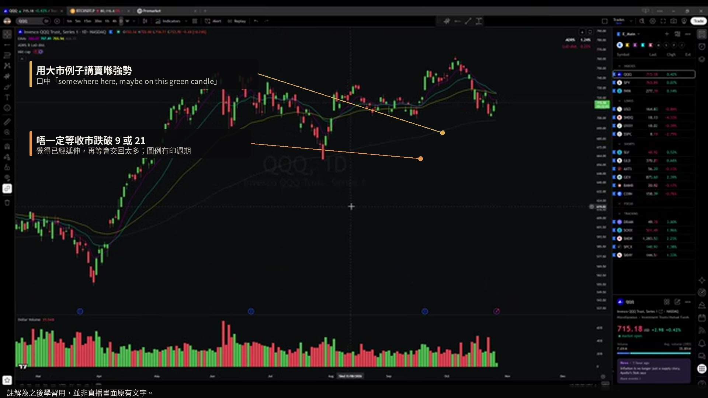

概要
用大市例子講點解有時唔等均線先走
1:05:57 聊天室提到一位交易者成日話，食完利潤之後都要留部分倉，等趨勢走完。佢自己賣出方面較寬鬆：唔一定等收市跌破 9 或者 21 EMA，有時會在強勢裏面整筆賣掉，尤其係覺得大市已經延伸。例如可能就在呢根綠燭走，因為已經拉得太遠；如果再等回調跌破 9，會交回太多，但代價係可能錯過再向上。賣喺強勢嘅好處係減少回撤，令權益曲線同心理資本都留在高位。佢仍然想盡量抱多一兩個星期、攞到大部分而唔係全部。因為經常賣得太早，所以想用混合做法：如果有五筆做多，可能嗰日賣三筆，留最強兩筆再抱高啲。賣出真係好難，佢冇硬性規則。
畫面用 QQQ 日線做「somewhere here, maybe on this green candle」嘅例子。
圖一
用大市例子講賣喺強勢
直播 1:08:10

原話
Someone has always said to keep some of the position left open after taking profits to let it ride the trend to the end. What do you think about that? Personally I'm more like lenient on the sell side, so sometimes I'm not going to wait for the close below maybe the 9 EMA or the 21 EMA. Sometimes I just sell the whole positions into the strength, and especially when I consider the market has been extended. Maybe I would exit the whole position somewhere here, like maybe on this green candle, just because I think it's just so extended, so stretched to the upside, and I will give back a little bit too much if I wait for the pullback to the close below the 9 EMA, but that means I'm going to miss the potential further upside. But selling the strength has a pretty big advantage, which is to minimize your drawdown, to keep your equity curve at the all-time highs and to also put your mental capital at the all-time highs too. To me, I tend to sell into strength more, but I still would like to hold as much as possible, to hold for at least maybe a week or two, and trying to capture most of the move but maybe not all of the move. But I always sell too early because of that. So maybe I would try to use a mixed approach: if I got five longs, maybe I would sell maybe three on this day and maybe keep the strongest two and then ride them higher. But I think selling is really hard, and I don't really have a hard rule on that.
有人成日話，食完利潤之後都要留部分倉，等趨勢走完。你點睇？我自己賣出方面較寬鬆，所以有時唔會等收市跌破大概 9 EMA 或者 21 EMA。有時我會在強勢裏面把成筆倉都賣掉，尤其係我覺得大市已經延伸。可能我會就在呢一帶離場，例如就在呢根綠燭，只係因為我覺得已經拉得太遠、向上拉得太緊，如果再等回調跌破 9 EMA，我會交回太多；但噉亦意味住可能錯過再向上。不過賣喺強勢有個頗大好處，就係減少回撤，令權益曲線留在高位，亦令心理資本留在高位。對我嚟講，我較傾向賣喺強勢，但我仍然想盡量抱得耐啲，至少抱多大概一兩個星期，盡量攞到大部分走勢，但未必全部。不過正因為噉，我經常賣得太早。所以或者我會試混合做法：如果我有五筆做多，可能嗰日賣三筆，留最強兩筆再抱高啲。但我覺得賣出真係好難，我喺呢樣冇硬性規則。
聊天室人名 Whisper 聽成 Krishna Kolomagyi，唔擅自改寫。呢段係賣出習慣，唔係新開倉規則。
點樣讀
重點係權衡：等均線先走，可能交回太多；賣喺強勢，又可能賣得太早。佢用混合做法去折衷，並且公開話冇硬性規則。
「五筆賣三、留兩筆」只係口中例子，唔當可複製倉位公式。圖例冇印週期。
附註
注意事項
- 聊天室提到嘅交易者名字以機器轉寫為準，唔確定官方寫法，故唔改名。